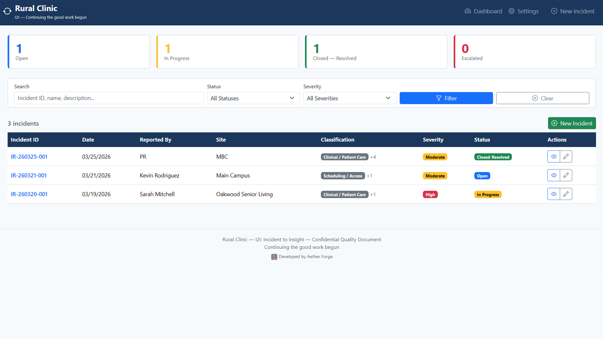

Turning incidents into organizational learning for healthcare practices
Small to medium physician practices often face the same incidents over and over because issues are captured inconsistently, follow-up is vague, and teams struggle to distinguish HR concerns from broken processes or service failures. I2I provides a structured incident reporting database that helps teams investigate thoroughly, assign corrective actions, and move cases to close instead of letting them disappear.
I2I is a local incident tracking application designed for healthcare practices, clinics, and care facilities. The system gives staff a repeatable method for documenting incidents, investigating root causes, assigning corrective actions, and tracking what the organization has learned over time. No cloud account is required, and all data remains on the local machine in a private SQLite database.

The strength of the incident database is not just capture. It drives a case from the first report through investigation, action ownership, verification, and closure. That matters for organizations trying to improve continuously because unresolved incidents rarely represent a single problem. They often combine customer service breakdowns, process failures, unclear accountability, and communication gaps. I2I makes those distinctions visible and actionable.
Guided incident workflow covers identification, narrative, root cause analysis, corrective actions, service recovery, team debrief, and closure.
Prompts help investigators move beyond the surface issue toward the real root condition with intuitive steps.
Status cards, search, filters, and a sortable incident table keep Open, In Progress, Closed, and Escalated cases visible.
Each action includes an owner, due date, and verification method so follow-through is concrete and measurable.
Printable 5 Whys, Fishbone, and checklist tools support interviews and structured investigations.
No cloud, no accounts, and no telemetry. Data stays on the device and can be backed up by copying one folder.
| Framework | How It Supports I2I |
|---|---|
| Root Cause Analysis | Focuses teams on systemic conditions instead of defaulting to blame. |
| 5 Whys | Guides investigators from the visible incident to the underlying cause. |
| Ishikawa Diagram | Maps causes across people, process, equipment, materials, communication, and environment. |
| PDSA | Supports corrective actions with verification rather than one-time fixes. |
| Just Culture | Helps distinguish human error, at-risk behavior, and reckless behavior. |
| Swiss Cheese Model | Encourages review of layered defenses and where they failed. |
I2I is available through the Microsoft Store and also has a public product page with the full feature description and usage guidance.
| Component | Stack / Technology |
|---|---|
| Application Type | Windows desktop application |
| Data Storage | Local SQLite database |
| Distribution | Microsoft Store |
| Privacy Model | Local-first, no cloud dependency |
| Workflow Support | Guided incident capture, investigation, corrective action, and closure |